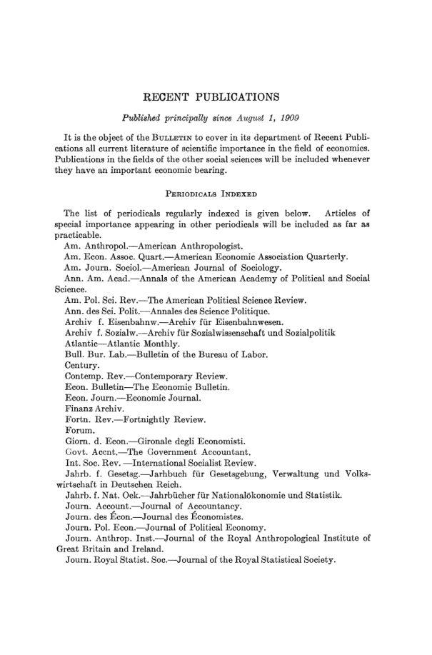

O Bulletin de dezembro de 1909: o aniversário, Newcomb e transportes
Leitura: 4 min
O programa dos 25 anos da associação, a conferência de Louisville sobre tributação, o obituário de Simon Newcomb e 34 resenhas com peso para transportes, moeda e bancos.


O número de dezembro de 1909 abre com o anúncio preliminar da celebração conjunta dos 25 anos da American Historical Association e da American Economic Association, em Nova York, de 27 a 31 de dezembro. Taft, o governador Charles Evans Hughes e o prefeito McClellan falariam no Carnegie Hall.
O que previa o programa?
Pela minha contagem, dez associações se reuniriam juntas. Para os economistas, o programa trazia o discurso presidencial de Davis R. Dewey, um histórico da associação por Richard T. Ely e uma sessão de teoria com um trabalho de Pantaleoni sobre economia dinâmica e outro de Henry Higgs, representante da Royal Economic Society.
O que mais contavam as notas?
A National Economic League reunia clubes econômicos inspirados no Economic Club of Boston, fundado em 1902. W. J. Ashley preparava uma edição anotada da Political Economy de Mill. Um comitê presidido por Böhm-Bawerk reunia fotografias de economistas para os 70 anos de Menger.
A Terceira Conferência Internacional sobre Tributação Estadual e Local, em Louisville, concentrou-se no novo imposto federal sobre corporações e na proposta de emenda constitucional do imposto de renda. Pediu que a relação entre as receitas federais, estaduais e locais fosse levada aos governadores.
Há dois obituários. Simon Newcomb, astrônomo e economista, morreu em 11 de julho de 1909, aos 74 anos; seus Principles of Political Economy são de 1885. A nota, assinada I. F., atribui a ele a distinção entre fundo e fluxo e a considera aparentemente a primeira formulação da equação da troca. Lester W. Zartman, de Yale, especialista em seguros, morreu em 20 de outubro, aos 30 anos incompletos.
Na nota, a distinção de Newcomb: “um ‘fundo’ refere-se a um ponto no tempo, e um ‘fluxo’, a um período”. (a "fund" relating to a point of time, and a "flow" relating to a period of time)
Que livros foram resenhados?
São 34 resenhas. T. N. Carver abre a seção com The Industrial System, de J. A. Hobson, um inquérito sobre renda ganha e renda não ganha.
Para Carver, a questão importa porque “os grandes problemas da próxima geração de economistas” girarão em torno da justiça distributiva. (The great problems for the next generation of economists)
Transportes formam o maior bloco. Frank Haigh Dixon resenha o relatório do Commissioner of Corporations sobre transporte por água e sete livros curtos. E. L. Bogart resenha a história da promoção e capitalização ferroviária de Cleveland e Powell; Lewis H. Haney, um estudo alemão sobre taxas de navegação.
Moeda e bancos vêm em seguida. H. Parker Willis resenha Victor Morawetz sobre o problema bancário e monetário americano, a quarta edição da história dos bancos de emissão de Charles A. Conant. Wesley C. Mitchell resenha Forty Years of American Finance, de Alexander Dana Noyes.
I. M. Rubinow resenha o volume IV da Cyclopedia of American Agriculture, organizada por Liberty Hyde Bailey, e lamenta que o primeiro estudo abrangente dos problemas agrícolas do país não tenha vindo de economistas profissionais. Maurice H. Robinson resenha as Yale Readings in Insurance, organizadas por Zartman. Fecham a seção população, assistência, habitação, sociologia e imprensa.
Como se organizava a bibliografia?
A seção Recent Publications reúne obras publicadas principalmente desde 1º de agosto de 1909, precedida da lista de periódicos indexados.
Na minha leitura
Na minha leitura, a nota sobre Newcomb é a peça teórica do número. A distinção entre uma grandeza medida num instante e outra medida num período parece trivial, mas organiza a análise de capital e renda e a própria equação da troca. Segundo a nota, foi com ela que Newcomb expôs a falácia da teoria do fundo de salários.
A conferência de Louisville registra outro tema permanente. Quando a União passa a tributar corporações e renda, a pergunta seguinte é como repartir as bases tributárias entre os níveis de governo.
Glossário
- Fundo e fluxo
- distinção entre grandezas medidas num instante (estoque) e grandezas medidas ao longo de um período.
- Equação da troca
- igualdade entre a circulação da moeda e o fluxo de bens em sentido inverso; base da teoria quantitativa da moeda.
- Banco de emissão
- banco autorizado a emitir notas que circulam como moeda.
Artigos desta edição
- Personal and Miscellaneous Notes — editores (pp. 321–348). Anúncio preliminar e programa dos 25 anos da associação, National Economic League, conferência de Louisville sobre tributação, nomeações e obituários de Simon Newcomb e Lester W. Zartman. JSTOR
- J. A. Hobson, The Industrial System: An Inquiry into Earned and Unearned Income — T. N. Carver (pp. 349–350). Inquérito sobre a distinção entre renda ganha e não ganha, que o resenhista liga ao problema da justiça distributiva. JSTOR
- Frederick A. Cleveland e F. W. Powell, Railroad Promotion and Capitalization in the United States — E. L. Bogart (pp. 350–351). História da promoção e da capitalização das ferrovias em todo o país, do início da construção ferroviária ao presente. JSTOR
- Th. Schuchart, Die volkswirtschaftliche Bedeutung der technischen Entwicklung der deutschen Zuckerindustrie — John Bauer (pp. 352–353). Estudo da indústria alemã de açúcar de beterraba e da relação entre progresso técnico e produção em grande escala. JSTOR
- Heinrich Ries e H. Leighton, History of the Clay-Working Industry in the United States — C. W. Parmelee (pp. 353–354). Primeiro levantamento geral da história da indústria cerâmica americana, com bibliografia de 172 títulos. JSTOR
- Liberty Hyde Bailey (ed.), Cyclopedia of American Agriculture, vol. IV: Farm and Community — I. M. Rubinow (pp. 354–359). Volume de uma enciclopédia agrícola dedicado à economia e à vida rural, apresentado pelo resenhista como o primeiro estudo abrangente dos problemas agrícolas do país. JSTOR
- Commissioner of Corporations, Report on Transportation by Water in the United States, Parts I–II — Frank Haigh Dixon (pp. 359–360). Relatório do Bureau of Corporations sobre as condições gerais do transporte por água e o tráfego hidroviário, com partes futuras previstas sobre terminais, tarifas e ferrovias. JSTOR
- Emory R. Johnson, Elements of Transportation — Frank Haigh Dixon (pp. 360). Texto introdutório que condensa os livros do autor sobre ferrovias e transporte marítimo e fluvial, com uma seção nova sobre ferrovias elétricas. JSTOR
- John H. Morrison, History of New York Shipyards — Frank Haigh Dixon (pp. 361). Informações sobre a construção naval em Nova York entre o fim do monopólio de Fulton, em 1824, e o fim do vapor de madeira, em 1865. JSTOR
- H. Raynar Wilson, The Safety of British Railways — Frank Haigh Dixon (pp. 361–362). Comparação entre as condições das ferrovias britânicas em 1874, registradas pela Royal Commission, e as do presente. JSTOR
- Alice Crary Sutcliffe, Robert Fulton and the "Clermont" — Frank Haigh Dixon (pp. 362). Volume preparado para as comemorações Hudson-Fulton pela bisneta do inventor, com retratos, cartas e desenhos em parte inéditos. JSTOR
- Yves Guyot, La Crise des Transports: Illusions et Réalités — Frank Haigh Dixon (pp. 363). Novo ataque do autor ao programa Baudin de investimentos em vias navegáveis na França. JSTOR
- Edwin A. Pratt, German Railways and Traders — Frank Haigh Dixon (pp. 363–364). Resumo do relatório Pearson e Reyntiens sobre as ferrovias alemãs, usado como argumento contra a estatização das ferrovias britânicas. JSTOR
- Charles Buxton Going, Methods of the Santa Fe: Efficiency in the Manufacture of Transportation — Frank Haigh Dixon (pp. 364). Estudo de cinco semanas sobre os métodos de gestão da ferrovia Santa Fe, publicado antes na Engineering Magazine. JSTOR
- Max Peters, estudo sobre as taxas de navegação, partes 2 e 3 (Schriften des Vereins für Socialpolitik) — Lewis H. Haney (pp. 365–366). Tratado sobre a economia e a política comercial das taxas cobradas pelo uso de vias navegáveis e portos. JSTOR
- Victor Morawetz, The Banking and Currency Problem in the United States — H. Parker Willis (pp. 366–368). Discussão de como criar uma agência central de controle da emissão de notas bancárias sem um banco central com monopólio de emissão. JSTOR
- Charles A. Conant, A History of Modern Banks of Issue, 4ª ed. — H. Parker Willis (pp. 368–369). Edição ampliada da história dos bancos de emissão, com as crises econômicas do século XIX e a crise de 1907. JSTOR
- James C. Smith, Money and Profit Sharing, or the Double Standard Money System — H. Parker Willis (pp. 369–370). Livro sobre as flutuações de preços desde a legislação monetária de 1871–1873 e sobre a participação nos lucros como meio de conciliar patrões e empregados. JSTOR
- Alexander Dana Noyes, Forty Years of American Finance — Wesley C. Mitchell (pp. 370–371). Edição ampliada de Thirty Years of American Finance, história financeira do governo e do povo americano de 1865 a 1907. JSTOR
- J. E. Boyle, The Financial History of Kansas — E. L. Bogart (pp. 372). Monografia sobre as finanças estaduais e locais do Kansas, apresentada como tese em Wisconsin em 1904. JSTOR
- Lester W. Zartman (ed.), Yale Readings in Insurance: I, Life Insurance; II, Fire Insurance — Maurice H. Robinson (pp. 373–374). Coletânea que substitui parte das antigas conferências de Yale sobre seguro de vida por textos de autores de referência. JSTOR
- Howard Brown Woolston, A Study of the Population of Manhattanville — William B. Bailey (pp. 375–376). Estudo intensivo de uma comunidade de cerca de quinze mil pessoas em Nova York, de sua história à vida industrial e social. JSTOR
- S. Guiraud-de Laharpe, La Dépopulation des Campagnes — William B. Bailey (pp. 376–378). Monografia premiada sobre as causas e os efeitos do êxodo rural e os remédios para tornar o campo mais atraente. JSTOR
- J. P. Wileman (org.), The Brazilian Year Book, 1908 — William B. Bailey (pp. 378–379). Primeiro número de um anuário oficial sobre o Brasil, com dados de comércio exterior por estado, finanças estaduais, mineração e ferrovias. JSTOR
- R. Paulucci di Calboli, Larmes et Sourires de l'Émigration Italienne — John Bauer (pp. 379–381). Descrição de ocupações de imigrantes italianos na França, como modelos, engraxates e músicos ambulantes. JSTOR
- William H. Allen, Civics and Health — Guy Montrose Whipple (pp. 381–384). Livro para professores que trata a saúde como obrigação cívica e a relaciona à eficiência industrial e nacional. JSTOR
- Amos G. Warner, American Charities, ed. revista por Mary Roberts Coolidge — Samuel McCune Lindsay (pp. 384–386). Nova edição do manual de assistência social mais usado nas faculdades americanas, com prefácio biográfico de George E. Howard. JSTOR
- Robert Coit Chapin, The Standard of Living among Workingmen's Families in New York City — Julius H. Parmelee (pp. 386–389). Estudo, feito para uma comissão da conferência estadual de caridades, do padrão de vida normal de famílias operárias de cinco pessoas em Nova York. JSTOR
- J. S. Nettleford, Practical Housing — Clinton Rogers Woodruff (pp. 389–390). Estudo sobre a questão habitacional por um vereador de Birmingham, presidente do comitê de habitação da cidade. JSTOR
- Arthur William Dunn, The Community and the Citizen — Clinton Rogers Woodruff (pp. 390–391). Livro-texto de educação cívica, fruto da experiência do autor no ensino de história e civismo. JSTOR
- William P. Pickett, The Negro Problem: Abraham Lincoln's Solution — Ulysses G. Weatherly (pp. 391–393). Livro sobre a questão racial nos Estados Unidos que defende a ideia de colonização no exterior associada a Lincoln. JSTOR
- Ludwig Hopf, The Human Species — Ulysses G. Weatherly (pp. 393). Tradução inglesa de um estudo que compara o homem aos outros animais pela anatomia, fisiologia, patologia e bacteriologia. JSTOR
- Charles Edward Woodruff, Expansion of Races — Charles A. Ellwood (pp. 393–397). Livro apresentado pelo resenhista como uma edição do século XX do ensaio de Malthus sobre a população, com acréscimos da biologia e da antropologia. JSTOR
- Michael M. Davis, Jr., Psychological Interpretations of Society — Charles A. Ellwood (pp. 397–398). Estudo sobre a sociologia psicológica, com metade do volume dedicada à teoria da imitação de Tarde. JSTOR
- James Edward Rogers, The American Newspaper — Walter Williams (pp. 398–401). Análise do jornalismo americano contemporâneo, que o autor descreve como essencialmente sensacionalista e comercial. JSTOR
- Recent Publications (pp. 402–438). Bibliografia corrente, sobretudo de obras publicadas desde 1º de agosto de 1909, precedida da lista de periódicos indexados, com livros e artigos por seção temática. JSTOR
Fontes
- Personal and Miscellaneous Notes (pp. 321–348). JSTOR · Internet Archive (PDF)
- [untitled] The Economic Bulletin, (1909-12-01), pages 349-350 (pp. 349–350). JSTOR · Internet Archive (PDF)
- [untitled] The Economic Bulletin, (1909-12-01), pages 350-351 (pp. 350–351). JSTOR · Internet Archive (PDF)
- [untitled] The Economic Bulletin, (1909-12-01), pages 352-353 (pp. 352–353). JSTOR · Internet Archive (PDF)
- [untitled] The Economic Bulletin, (1909-12-01), pages 353-354 (pp. 353–354). JSTOR · Internet Archive (PDF)
- [untitled] The Economic Bulletin, (1909-12-01), pages 354-359 (pp. 354–359). JSTOR · Internet Archive (PDF)
- [untitled] The Economic Bulletin, (1909-12-01), pages 359-360 (pp. 359–360). JSTOR · Internet Archive (PDF)
- [untitled] The Economic Bulletin (1909-12-01), page 360 (pp. 360). JSTOR · Internet Archive (PDF)
- [untitled] The Economic Bulletin (1909-12-01), page 361 (pp. 361). JSTOR · Internet Archive (PDF)
- [untitled] The Economic Bulletin, (1909-12-01), pages 361-362 (pp. 361–362). JSTOR · Internet Archive (PDF)
- [untitled] The Economic Bulletin (1909-12-01), page 362 (pp. 362). JSTOR · Internet Archive (PDF)
- [untitled] The Economic Bulletin (1909-12-01), page 363 (pp. 363). JSTOR · Internet Archive (PDF)
- [untitled] The Economic Bulletin, (1909-12-01), pages 363-364 (pp. 363–364). JSTOR · Internet Archive (PDF)
- [untitled] The Economic Bulletin (1909-12-01), page 364 (pp. 364). JSTOR · Internet Archive (PDF)
- [untitled] The Economic Bulletin, (1909-12-01), pages 365-366 (pp. 365–366). JSTOR · Internet Archive (PDF)
- [untitled] The Economic Bulletin, (1909-12-01), pages 366-368 (pp. 366–368). JSTOR · Internet Archive (PDF)
- [untitled] The Economic Bulletin, (1909-12-01), pages 368-369 (pp. 368–369). JSTOR · Internet Archive (PDF)
- [untitled] The Economic Bulletin, (1909-12-01), pages 369-370 (pp. 369–370). JSTOR · Internet Archive (PDF)
- [untitled] The Economic Bulletin, (1909-12-01), pages 370-371 (pp. 370–371). JSTOR · Internet Archive (PDF)
- [untitled] The Economic Bulletin (1909-12-01), page 372 (pp. 372). JSTOR · Internet Archive (PDF)
- [untitled] The Economic Bulletin, (1909-12-01), pages 373-374 (pp. 373–374). JSTOR · Internet Archive (PDF)
- [untitled] The Economic Bulletin, (1909-12-01), pages 375-376 (pp. 375–376). JSTOR · Internet Archive (PDF)
- [untitled] The Economic Bulletin, (1909-12-01), pages 376-378 (pp. 376–378). JSTOR · Internet Archive (PDF)
- [untitled] The Economic Bulletin, (1909-12-01), pages 378-379 (pp. 378–379). JSTOR · Internet Archive (PDF)
- [untitled] The Economic Bulletin, (1909-12-01), pages 379-381 (pp. 379–381). JSTOR · Internet Archive (PDF)
- [untitled] The Economic Bulletin, (1909-12-01), pages 381-384 (pp. 381–384). JSTOR · Internet Archive (PDF)
- [untitled] The Economic Bulletin, (1909-12-01), pages 384-386 (pp. 384–386). JSTOR · Internet Archive (PDF)
- [untitled] The Economic Bulletin, (1909-12-01), pages 386-389 (pp. 386–389). JSTOR · Internet Archive (PDF)
- [untitled] The Economic Bulletin, (1909-12-01), pages 389-390 (pp. 389–390). JSTOR · Internet Archive (PDF)
- [untitled] The Economic Bulletin, (1909-12-01), pages 390-391 (pp. 390–391). JSTOR · Internet Archive (PDF)
- [untitled] The Economic Bulletin, (1909-12-01), pages 391-393 (pp. 391–393). JSTOR · Internet Archive (PDF)
- [untitled] The Economic Bulletin (1909-12-01), page 393 (pp. 393). JSTOR · Internet Archive (PDF)
- [untitled] The Economic Bulletin, (1909-12-01), pages 393-397 (pp. 393–397). JSTOR · Internet Archive (PDF)
- [untitled] The Economic Bulletin, (1909-12-01), pages 397-398 (pp. 397–398). JSTOR · Internet Archive (PDF)
- [untitled] The Economic Bulletin, (1909-12-01), pages 398-401 (pp. 398–401). JSTOR · Internet Archive (PDF)
- Recent Publications (pp. 402–438). JSTOR · Internet Archive (PDF)
- Sumário da edição no JSTOR: The Economic Bulletin, vol. 2, nº 4.
Documento em domínio público (EUA, publicado antes de 1931), via JSTOR Early Journal Content e Internet Archive. Resumo e comentário do autor deste site, sem afiliação com a American Economic Association. Encontrou um erro? Escreva: a correção é publicada no próprio texto, com data.
← Nº 102 · Price, 1909: a reforma do seguro de vida em Nova York Nº 104 · Nova York, 1909: 25 anos da associação, salários, trustes e impostos →